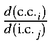

Next: Hessian matrix in Up: Gradients Previous: Gradients


Next: Hessian matrix in Up: Gradients Previous: Gradients
The first step in calculating the gradients is to calculate the derivatives with respect to Cartesian coordinates. This is done in subroutine DCART.
DCART calculates the energy of each pair of atoms, then moves one atom a small distance (10-4Å) in each of the three Cartesian directions. The density matrix for the atom-pair is not changed during this calculation, but is set equal to the SCF density matrix. The derivative for each atom is then calculated from:
where EAB' is the energy of the pair of atoms after displacement in the appropriate direction. For a stationary point, these derivatives are zero.
To convert from Cartesian coordinate (c.c.) derivatives into gradients (i.c.), the sum
must be evaluated. Evaluation of is quite simple, and in done in routine JCARIN.